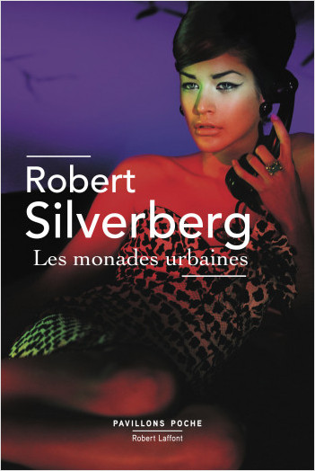
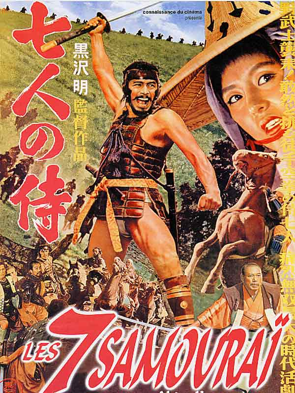
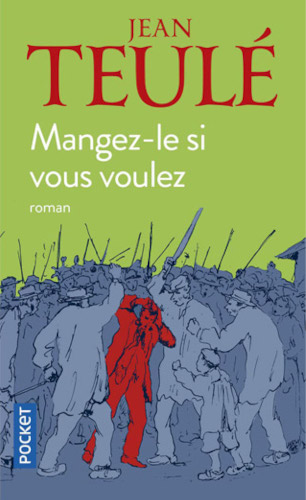
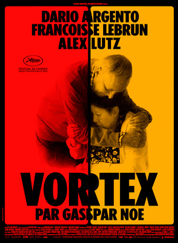
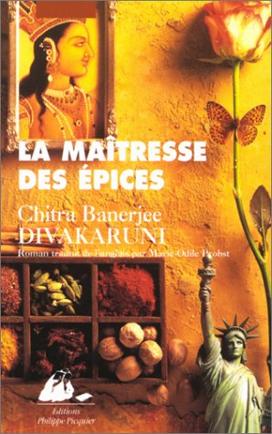
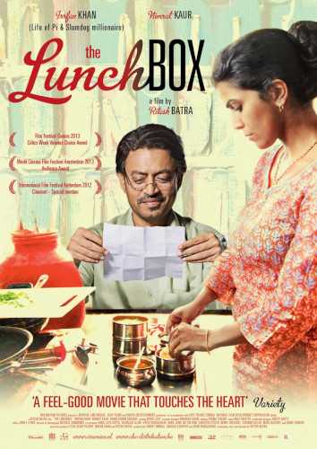

Imagine un futur où tout le monde (ou presque) vit dans des tours de plusieurs kilomètres de haut (oui, tu as bien lu kilomètres). En bas, les demeurés qui comptent leurs doigts et en haut les classes supérieures qui se reniflent le postérieur. Il faut faire des enfants en pagaille et refuser d'avoir des rapports avec quelqu'un est passible de mort. Ah ? Ben ouais, ça aurait pu être un paradis, mais en quelques nouvelles Mr Silverberg nous fait déchanter et nous rappelle qu'il nous reste encore beaucoup de chemin avant de trouver le bon équilibre. Et qui dit équilibre, dit instabilité.

Les sept samouraïs (Akira Kurosawa)
Quand j'ai vu les 7 mercenaires, film hollywoodien avec une floppée d'acteurs tous plus célébres les uns que les autres et testostéronés comme des... Ouais des quoi ? Passons. Donc quand j'ai vu ce film c'était du temps de l'ORTF (Ha ha) la télévision nationale de l'époque. Alors pour voir un film japonais c'était impensable. Le temps passant, je découvre les 7 samouraïs et je me dis que les japonais sont forts quand il s'agit de plagier. J'étais vraiment épaté par ce film, je l'ai trouvé magnifique, je dirais même génial. Puis, pour en parler aujourd'hui j'ai fait une petite recherche et découvert que je vivais dans les ténèbres. Non, c'est Hollybouse qui a copié Akira Kurosawa. J'ai fait amende honorable et je l'ai regardé en V.O. 200 mn de pur plaisir.

Dent creuse (Fbg Saverne Strasbourg)
On passe souvent devant la façade d'un immeuble et elle n'est remarquée que s'il y a quelque chose qui présente un intérêt singulier. Puis survient un événement ou une décision qui change l'ordre des choses. Un matin, une pelleteuse se met à grignoter la façade et son intérieur, elle laisse alors apparaître ce qu'il y a de l'autre côté, des traces de ce qui fût les murs de pièces d'habitation qui sont comme un vieux patchwork démodé. Des blessures là où les murs et les planchers venaient se fixer ou s'appuyer, parfois un reste de conduite de cheminée. Mais le futur a déjà commencé à couler sa chape d'oubli, on sent que bientôt cet endroit qui fût, ne sera plus que dans quelques souvenirs. Mais rassurons-nous, si le futur détruit notre présent, il meurt aussi et c'est nous qui en faisons notre mémoire.
Mangez le si vous voulez (Jean Teulé)
Vous vous souvenez de la chanson Les spermatozoïdes (Ricet BARRIER) ? Je vous disais que l'affiche était de Jean Teulé. Mais je ne vous avais pas dit que ce dernier était aussi écrivain. Et quel écrivain... Dans ce livre que je ne saurais classer, il nous raconte un fait divers (réel) où tout est parti d'un quiproquo. La tension et le suspense vont crescendo, je ne vous en dis pas plus, euh si, âme sensible s'abstenir. Et si ta confiance dans le genre humain vacille, là tu préfèreras les bêtes aux humains.

Je t'ai manqué (Alain Bashung)
Ce titre vient de Bleu pétrol, dernier album du chanteur. Et... Non je n'ajouterai pas une critique de plus à toutes celles qui existent déjà, ce n'est pas mon métier. Vous avez un doigt pour faire une recherche sur le web. Mais vous le présenter ou le rappeler à votre souvenir c'est déjà vous dire que c'est un artiste que j'aime encor (oui il n'y a pas de e). j'ajouterai qu'il fût un temps où je me la jouais poète, c'était une béquille qui m'a aidé à exprimer ce que je vivais à cette époque, cette lubie est partie tout comme l'acnée. Le temps a passé puis dans les années 80 j'ai découvert Alain Bashung, mais j'étais ailleurs : musique underground et autres pépites des petits labels. Jusqu'à l'album Osez Joséphine qui m'a permis d'entrer dans son univers poétique et je n'en suis jamais sorti.
Vortex (Gaspar Noé)
En cherchant un film à regarder dans la catégorie fantastique, je remarque Vortex avec Alex Lutz. Pour moi cet acteur est tellement talentueux qu'il pourrait jouer n'importe quoi et pourquoi pas un film fantastique. Mais ce que j'ai vécu était pire que si j'avais cliqué sur Pinocchio et que j'étais tombé sur un film porno.
Je ne m'attendais pas à un film d'une telle intensité et sur un sujet aussi difficile, à savoir la vieillesse. Je n'en dis pas plus, mais la présentation et la manière dont c'est filmé m'ont vraiment impressionné. Et la séquence d'images à la fin m'a presque fait pleurer.
P.S. : Si tu rêves de devenir influenceur à Dubaï, ne regarde pas ce film, sinon tu risques de devenir humain.

La maîtresses des épices (Chitra Banerjee Divakaruni)
Dans ce livre l'héroïne fait chanter les épices, moi je ne sais même pas les faire balbutier. Non, c'est elles qui me parlent, elles passent par mes souvenirs olfactifs et me rappellent tout un tas de moments vécus avec plus ou moins de bonheur autour de la table. L'odeur d'un plat de haricots blancs obligé de finir jusqu'au dégoût, me rappelle une cantine de maternelle. La coriandre sommairement pilée ma première salade composée que j'ai adorée. Le cumin avec du sel saupoudré sur les fèves cuites à l'eau avec la peau que l'on achetait chez un marchant ambulant dans les ruelles.
Et la nigelle, ça te parles la nigelle ? Moi elle me dit le pain de mon enfance tout chaud revenu de la cuisson du four public, elle me dit aussi « jaban kool ou ban » une friandise de rue pour laquelle je vendrais mon âme.
Même si ce livre n'est pas un monument littéraire, il aura le mérite d'éveiller certains souvenirs olfactifs enfouis en vous.

Cumbia sobre el mar (Leandro Torres y el Trío Serenata)
Mais comment je me suis retrouvé à écouter cette chanson ? Je sais plus, ah si la pochette, je trouvais la photo tellement belle que j'ai cliqué. Pas la photo que vous voyez là, non celle là, hein elle claque n'est ce pas ? Depuis, ça fait une semaine que je tourne en boucle entre l'originale et les innombrables versions de cette chanson. Je vous présente celle qui vous fournira le plus d'informations mais soyez curieux, c'est un bon défaut.
The lunch box (Ritesh Batra)
Une voisine aide une jeune épouse à resserrer les liens avec son mari. Vous voulez savoir comment ? Non je peux pas vous le dire. Non je peux pas, et ne cherchez pas sur le net avant de le voir, vous y perderiez toute la délicatesse de cette histoire d'amour bien peu banale. Après vous pourrez en apprendre plus sur les castes, les religions et le système de distribution des dabbawallahs. Ce film qui semble léger au premier abord est intéressant et bien filmé.

Mes parents sont pas là (Thomas Fersen)
C'est par "Pièces montée des grands jours" que j'ai découvert Thomas Fersen, sa liberté avec les mots m'avait touché. Mais c'est une autre chanson que je vous propose à l'écoute, le choix n'a pas été simple car il est tellement prolifique. Je ne pense pas (mais je ne suis pas musicien) qu'il faille s'attacher à la musique, c'est surtout ses textes qui sont ciselés comme des pièces d'orfèvrerie auxquelles il faut prêter attention. Et si t'as pas de coeur après ça, t'auras au moins un ventricule.
Grandir (Firdaus Kanga)
Ne vous fiez pas à la couverture, c'est pas du tout une histoire de petite fille, loin de là. C'est plutôt une autobiographie très romancée de l'auteur vivant à Bombay. Il est issu d'une famille parsie très ouverte, cultivée et pleine d'humour. Ça vous changera des historiettes sirupeuses comme des "gulab jamun" pondues par la bollywood brain washing machine.
Quand vous me demandez mon âge vous êtes surpris par la réponse, puis vous me demandez mon secret. Je n'en ai aucun si ce n'est de bien dormir et d'éviter les longues expositions au soleil. Eh oui le soleil est l'ennemi de la peau. Bon à savoir : dans les pays méditerranéens il n'y a que pour les touristes que l'on aménage des bronzariums et dans les pays du maghreb c'est le territoire des femmes.
Dark Was the Night (Blind Willie Johnson)
Quand j'entends les premières mesures de cette chanson, je me tais, je ferme les yeux et plus rien ne compte. Chuuuut écoute.
The Maid Freed From The Gallows (John Jacob Niles)
C'est avec cette chanson que j'ai découvert le monde musical de John Jacob Niles. Ecoutez sa tessiture de voix, sentez comme il vit sa chanson. Tout est simple et tellement puissant.
En faisant des recherches j'ai appris qu'il faisait de la lutherie pour fabriquer ses instruments (anciens ou bizaroïdes), qu'il se moquait du succès, bref un mec étrange. M'en fallait pas plus pour l'adorer.
Afghan (Bazgul Badakhshi)
Je cherchais une musique pour illustrer l'article sur Les Cavaliers tout en me demandant ce qui avait pu envoûter Joseph Kessel en Afghanistan. Seulement il y avait tellement de belles choses dans cette région du monde que j'étais perdu. Peut-être y a-t-il ressenti le sentiment océanique. Et de vidéo en vidéo je regarde celle-ci sans grande conviction, musicalement elle me transporte moins que d'autres, et puis je vois le musicien avec le tambourin. Là tout a basculé, j'ai cru que je comprenais ce que le chanteur racontait, le percussionniste mimait la chanson et la vivait, je suis resté bouche bée jusqu'à la fin.
Les Cavaliers (Joseph Kessel)
Mais puisque je vous dis que j'ai vu Guardi Guedj l'aïeul de tous les aïeux. J'étais dans le camion qui l'emmenait vers une tchaïkhana, j'ai patiemment attendu d'arriver pour l'entendre conter l'une de ces innombrables histoires de l'hindou kouch. J'ai senti mes membres gagnés par l'arthrite comme Toursen le plus grand tchopendoz, j'ai eu la jeunesse bravache de Ouroz, j'ai crié dans l'oreille de Jehol le cheval fou, j'ai été Saï le palefrenier de Jehol, d'abord bon puis perverti par l'avidité de Zéré… Longtemps après avoir lu et relu plusieurs fois ce livre, je revis avec intensité certains moments que raconte l'auteur qui a su nous donner une grande part de son amour pour l'Afghanistan. Je recommande vivement sa lecture et relecture à tous les âges de la vie.

{kind=link}